网上基本90%都是搭建一个独立的博客，但是对于小白来说，github pages这种东西还蛮受用，而且还更可以把自己的代码托管到github，感觉很方便。
所以自己也一步一步摸索，搭建了静态页面，并且成功显示。想把这个过程记录下来或者分享给更多人。让大家都受益。所说的这些都是在已经创建了github账户并且有了SSH密钥的基础上。
第一步：创建一个新的仓库
点击头像旁边的加号，然后点击“new repository”，出现下图，一次按照步骤“1,2,3..”操作。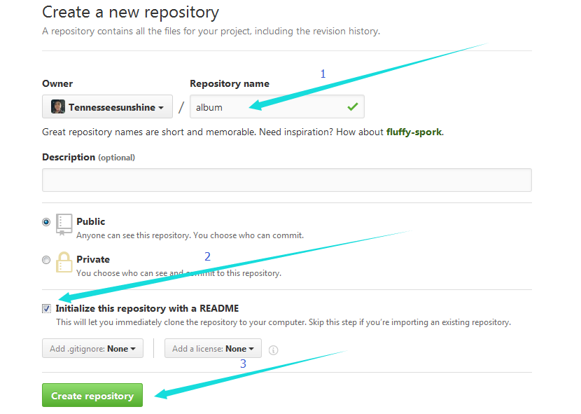
第二步：创建一个github pages分支即“gh-pages”
因为根据第一步创建完成之后，会有一个默认的master分支，并且后续的显示操作都在“gh-pages”，所以得先创建一个。按照图中序号依次点击操作。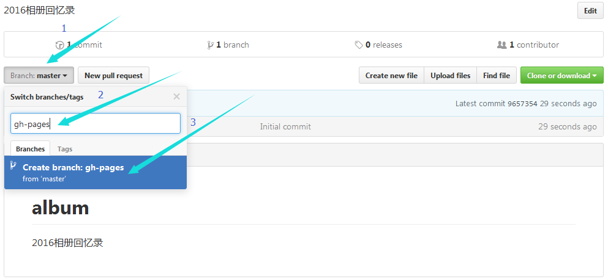
第三步：在桌面上建好自己已经写好的代码
把自己写好的html页面，css样式以及js都放在一个新建的跟刚才建仓库名称一样的目录中。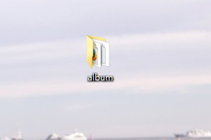
第四步：打开github客户端
当然因为github下载太慢，这里有一个离线包，http://download.csdn.Net/download/lyg468088/8723039进行下载并安装。解压之后运行github.exe，然后登陆自己的github账号，登陆之后点击左上角加号选择clone，然后选择自己账户下面自己之前创建的那个仓库，之后点击最下面的clone。记下来会弹窗出现选择要克隆的文件，然后选择刚刚自己代码的路径即可。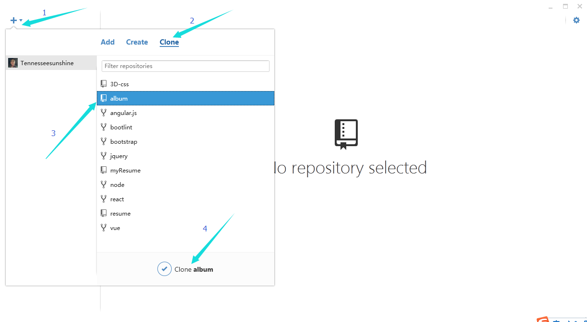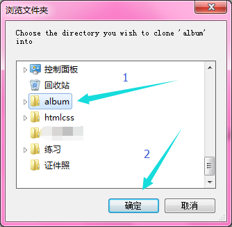
第五步：返回github客户端
返回github客户端,点击页面上的"master"，切换到"gh-pages"分支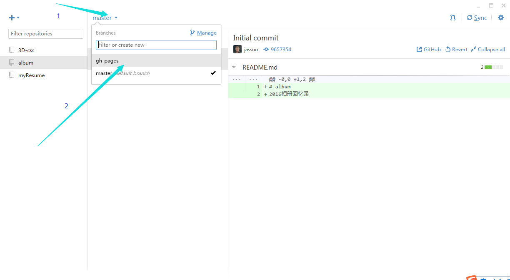
点击完成后，返回到自己的代码中，会出现这样的情况，然后将自己代码全部选中，拖进刚刚生成的文件夹中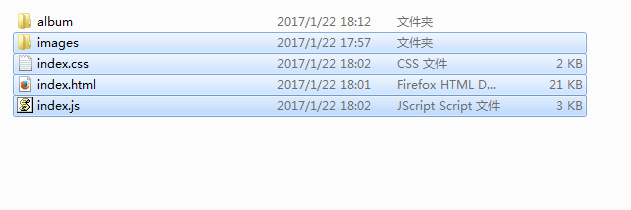
出现如下效果
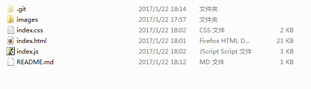
第六步：上传
返回到客户端，这时候会发现右侧有了变化，然后按照步骤点击操作。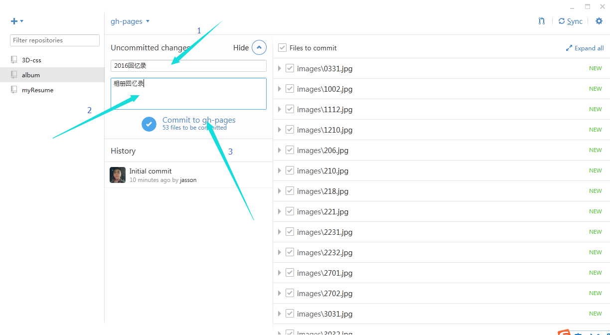
点击完稍等片刻，点击右上角"sync"，进行网页版同步。然后登陆网页版github，找到刚刚建的仓库，点击进入，将分支切换成为"gh-pages",就可以看到自己上传的代码。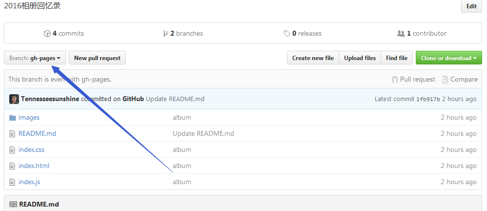
第七步：浏览
那么怎么浏览写出来的页面呢？找到仓库中的"settings"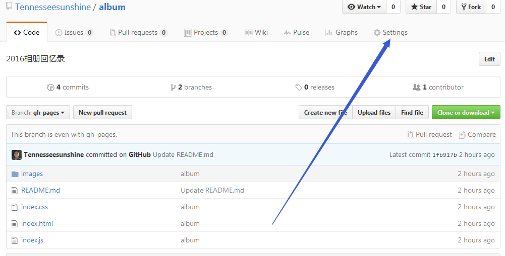进来之后往下拖，找到"github pages"，然后点击网址即可。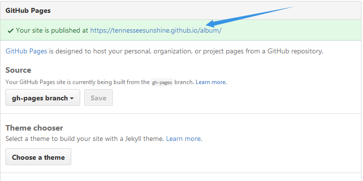
然后会出现对应的页面
如此，所有的步骤都完结了。终于可以通过网址来访问自己写的页面了。希望和我一样的初入江湖的小白都能早日摆脱"菜鸟"称号，成为真正意义上的大神。